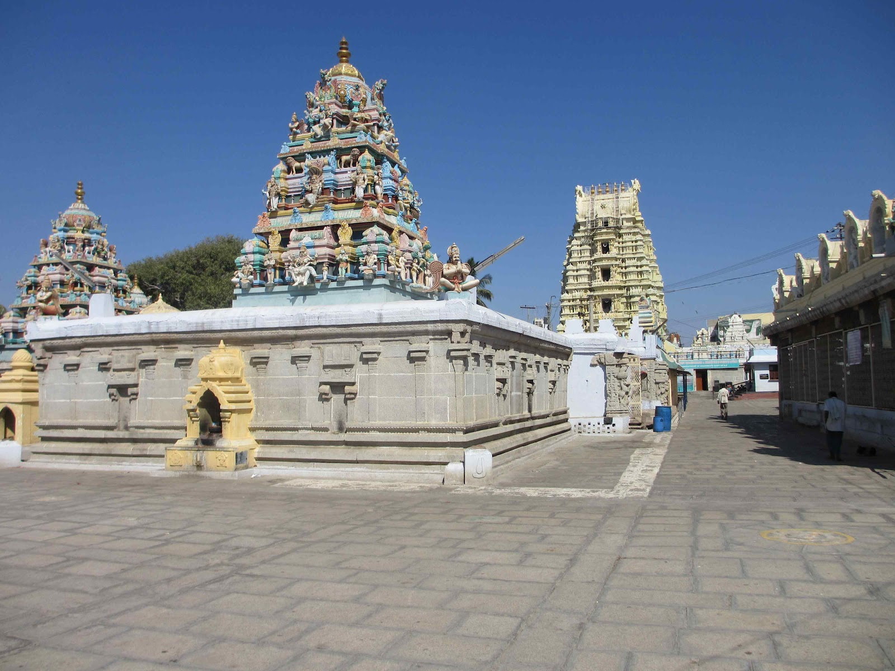

Architectural Marvels of Andhra Pradesh
The architecture of Andhra Pradesh reflects a rich cultural heritage with diverse styles and structures. Here, we explore some of the most notable architectural marvels found exclusively in Andhra Pradesh.

Lepakshi Temple:
A significant example of Vijayanagara architecture, known for its grand sculptures, intricate carvings, and the iconic hanging pillar.
Undavalli Caves:
An ancient rock-cut cave complex showcasing the early Dravidian architecture, featuring intricately carved Buddhist temples and monasteries.

Ahobilam Temples:
Located in the Nallamala hills, these temples are renowned for their ancient Dravidian architectural style and stunning natural surroundings.